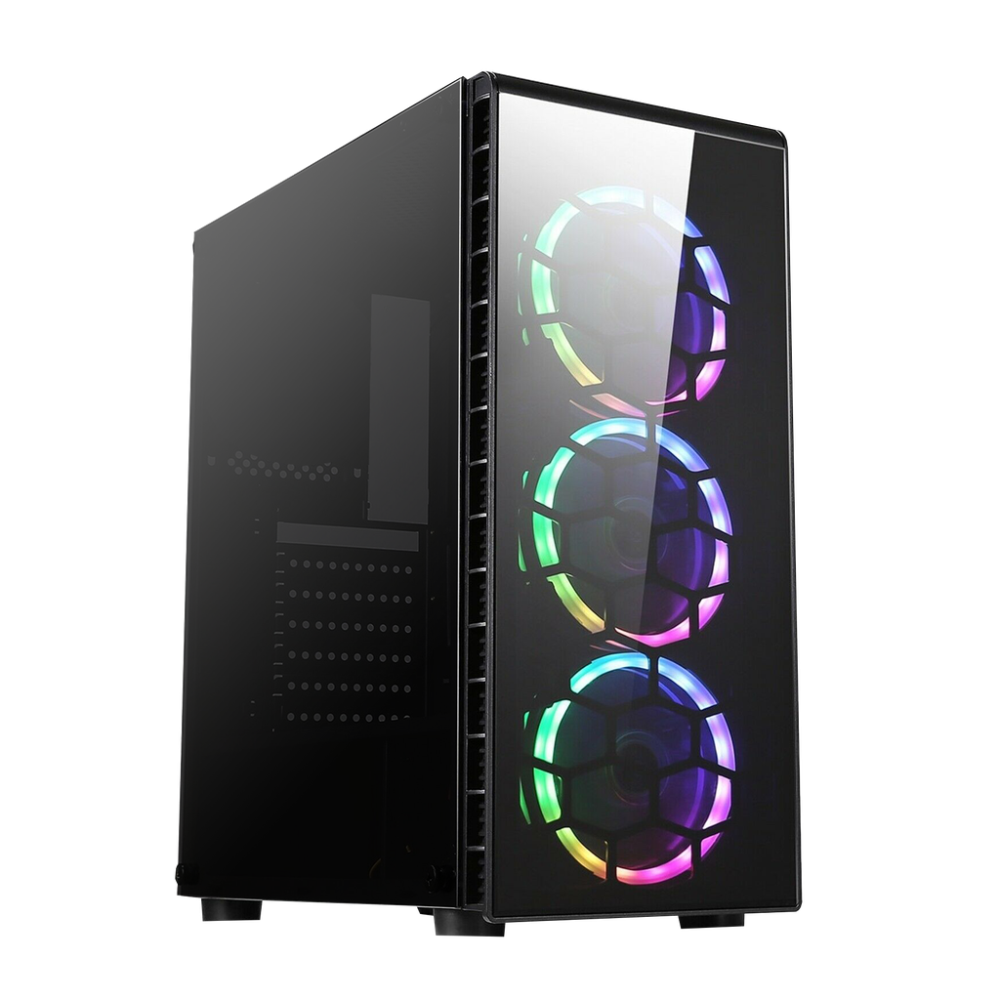
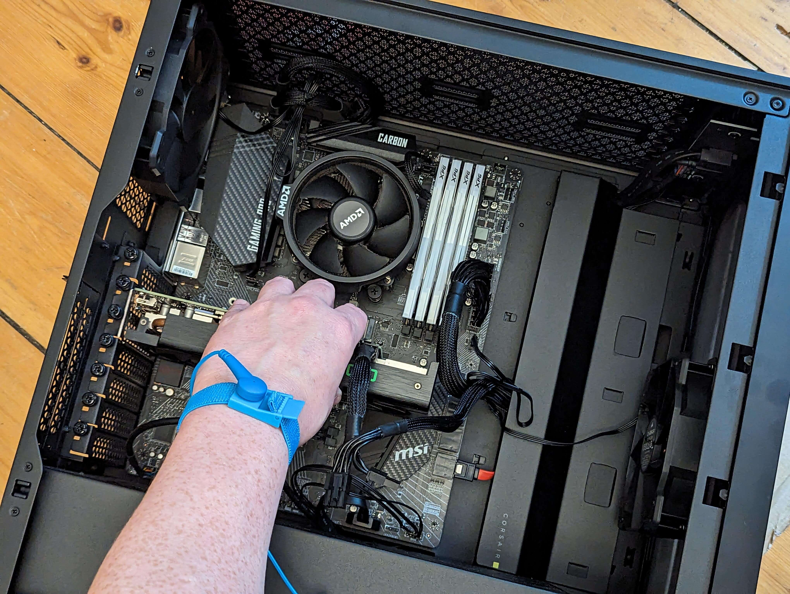
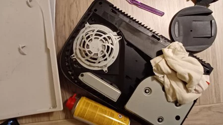

Mantenimiento de Notebooks
Limpieza profunda, cambio de pasta térmica. También se puede solicitar aumento de RAM y mejora de SSD.
Ver detallesArmado de PC a Medida

Ensamblaje , gestión de cables, configuración de BIOS y optimización de Windows.
Ver detallesMantenimiento de PC de Escritorio

Eliminación de polvo, cambio de pasta térmica y pruebas de temperatura para evitar lentitud.
Ver detallesMantenimiento y Desbloqueo de Consolas

Limpieza profunda para eliminar ruido, cambio de pasta térmica y configuración de software (desbloqueos y emuladores retro).
Ver detalles